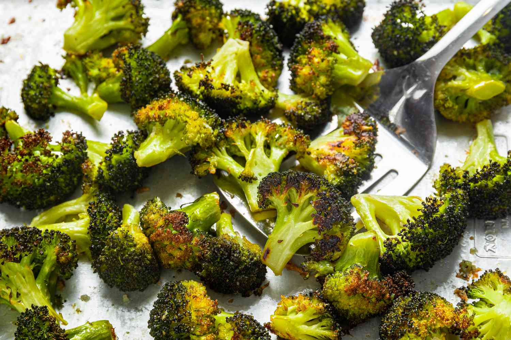

Roasted broccoli

Description
Roasted broccoli is easy to make and so much more flavorsome than boiled. My favorite part is the roasted sliced stem pieces.
Ingredients
- 14 ounces broccoli
- 1 tablespoon olive oil
- salt and pepper
Steps
- Preheat the oven
- Cut broccoli and mix with olive oil in a bowl
- Roast in the preheated oven